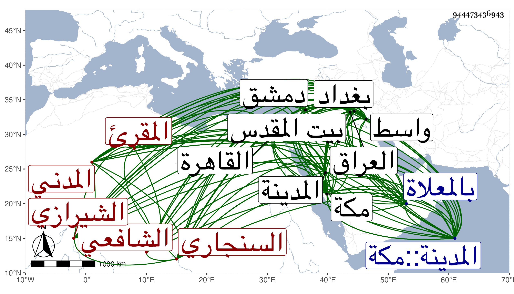

0902Sakhawi.DawLamic.ITO20230111-ara1.EIS1600.944473436943
Biography ID: 944473436943
121
محمد بن عبد القادر بن عمر النجم السنجاري الشيرازي الأصل الواسطي المولد الشافعي المقرئ نزيل الحرمين وربما كتب له المدني ويعرف بالسكاكيني وسمى شيخنا والده عبد الله بن عبد القادر . ولد فيما بين سنة سبع وخمسين إلى ستين بواسط واشتغل في بغداد على جماعة منهم فريد الدين عبد الخالق بن الصدر محمد بن محمد ابن زنكي الإسفرايني الشعيبي قرأ عليه المحرر للرافعي والحاوي الصغير والغاية القصوى للبيضاوي وينابيع الأحكام في المذاهب الأربعة لوالده وكذا قرأ في بغداد البردة على قاضي قضاة العراق على الإطلاق الشهاب أحمد بن يونس بن إسماعيل بن عبد الملك المسعودي التونسي المالكي وتلا للسبع والعشر بما تضمنه الإرشاد لأبي العز القلانسي على خضر العجمي عند قدومه من القاهرة إلى العراق وعرض عليه من حفظه الشاطبية وتلا على العلاء محمد بن التقي عبد الرحمن بن عبد المحسن الواسطي بما تضمنه الكنز من القراآت إلى آخر آل عمران وروي عنه الشاطبية أيضا وأجاز له ، ثم ارتحل في الطلب وتبحر في القراآت فقرأ الشاطبية على أبي العباس أحمد التروجي مدرس البرجانية ببغداد قراءة بحث واتقان وتحقيق لوجوه القراآت ، ولما غارت أصحاب تمر على العراق أخذت كتبه جميعها مع مقروءاته ومسموعاته وإجازاته ولم يبق له شيء من الكتب ، وحج في سنة تسع وثمانمائة وجاور بمكة التي تليها وتلا فيها للسبع إلى آخر آل عمران على النور بن سلامة بما تضمنه التيسير والشاطبية ، وعرض عليه الشاطبية حفظا وأذن له في الإقراء والتصدير وأخذ عن المجد اللغوي بعض شرحه للبخاري وبعض القاموس وغير ذلك وعاد إلى العراق وتصدى بها لإقراء القرآن . ثم دخل دمشق قاصدا زيارة بيت المقدس سنة خمس عشرة فقرأ به إلى آخر آل عمران أيضا على الزين أبي المعالي بن اللبان بما تضمنه الكنز في القراآت العشر والكفاية نظم الكنز كلاهما للإمام النجم عبد الله بن عبد الواحد الواسطي والإرشاد لأبي العز القلانسي والتيسير وأذن له في الإقراء والتصدير ، ثم قدم مكة قبل الثلاثين بمدة يسيرة وانقطع بها للإقراء وصار يتردد في بعض السنين إلى المدينة النبوية ثم انقطع بها وصار يتردد إلى مكة في أيام الموسم للحج خاصة ثم قطنها بعد الحج في سنة سبع وثلاثين إلى أن مات بها في ليلة الأحد خامس عشري ربيع الآخر سنة ثمان وثلاثين ودفن بالمعلاة ، وكان إماما عالما صالحا متواضعا حريصا على نفع الطلبة مشهورا بخبرة كتاب الحاوي وحسن تقريره درس بالحرمين وأفتى بهما وانتفع به كثير من الطلبة فيهما وفي غيرهما ، وممن أخذ عنه أبو الفرج المراغي والمحب الطبري إمام المقام بمكة والكثير من نظمه الشمس بن الشيخ علي بواب سعيد السعداء ، وعرض عليه ابن أبي اليمن وغيره وقرأ عليه التقي بن فهد وجماعة . وله مؤلفات منها شرح المنهاج الأصلي وتخميس البردة وبانت سعاد وسماه تنفيس الشدة وبلوغ المراد في تخميس بانت سعاد وله قصيدة دون أربعين بيتا فيما وقع من النهب بالمدينة النبوية وغير ذلك ونظم التتمة في القراآت العشر وجعلها في وزن الشاطبية وقافيتها وجعلها بين بيوتها أدخل كل شيء مع ما يناسبه وشرحها باختصار . وقد ذكره شيخنا في إنبائه باختصار وقال يقال إنه قرأ على العاقولي ومهر في القراآت والنظم والفقه بحيث قيل إنه أقرأ الحاوي ثلاثين مرة وله شرح على المنهاج الأصلي ونظم لبقية القراآته العشر تكملة للشاطبي على طريقته حتى يغلب على الظن أنه نظم الشاطبي وخمس البردة وبانت سعاد . مات بمكة في سادس عشري ربيع الآخر رحمه الله .
